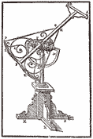

|
|
|
|
|
| |
 |
|
|
Tycho Brahe wird am 15. Oktober 1546 als
Kind einer zum dänischen Hochadel gehörenden Familie in
Knudstrup geboren. Dort wäre er, wie in der adligen
Gesellschaft damals üblich, ohne jede Ausbildung aufgewachsen, wenn ihn sein
Onkel nicht zum Studium der Rechtswissenschaften und der Philosophie in
eine lateinische Schule und 7 Jahre später auf die
lutherische Universität in Kopenhagen geschickt hätte.
|
|
|
| |
Schon
sehr früh zeigt Tycho ein lebhaftes Interesse für
die Beobachtung der Sterne. Gegen 1562 beginnt er
sein Studium der Wissenschaften in Leipzig, wo er namhaften
deutschen Astronomen begegnet. Er besucht mehrere Universitäten,
darunter die Universität zu Wittenberg, wo es
zu einem Duell mit einem anderen Studenten kommt. Tycho Brahe verliert bei
dem Kampf einen Teil seiner Nase, den er mit
einer Nasenprothese aus einer Gold-Silber-Legierung ersetzt.
|
|
|
|
| |
|
Mit 17
Jahren erkennt er, dass die astronomischen Tafeln
Fehler enthalten und beschließt, die Tafeln zu
überarbeiten. 1569 lässt er in Augsburg besonders
präzise Messinstrumente bauen. Mit diesen Instrumenten entdeckt er 1572 einen
"neuen Stern" in der Cassiopeia und verliert ihn bis
zu seinem Erlöschen nicht mehr aus
den Augen. Dem aristotelischen Konzept von
der unveränderlichen Welt widersprechend beweist Tycho mit
seinen Beobachtungen des Sternhimmels, dass
hinter der Späre mit den Fixsternen weitere Sterne liegen.
|
|
|
|
|
| |
|
1575 kehrt er nach
Kopenhagen zurück und erhält Unterstützung durch Friedrich II., der
ihn zu seinem Hofastronomen ernennt. Neben erheblichen
finanziellen Zuwendungen wird ihm die Insel Hveen zur Verfügung
gestellt, um dort eine Sternwarte zu errichten. Dank der
ausgezeichneten auf der Insel herrschenden Sichtverhältnisse kann Tycho
vom großen und weitläufigen "Uraniborg" (Burg
der Uranie, Muse der Astronomie) aus regelmäßig
den Sternenhimmel beobachten. Er hat dort Platz
genug, um zahlreiche Studenten, Mitarbeiter und
Wissenschaftler zu empfangen und darüber hinaus ein Alchimistenlaboratorium
und eine Druckerei einzurichten.
|
|
|
|
 |
|
Zwanzig Jahre
seines Lebens widmet er an diesem außergewöhnlichen
Ort der Beobachtung der Sterne. Dann heiratet
er ein junges Mädchen bescheidener Herkunft, ohne sich
um die feindseligen Reaktionen hoher dänischer Würdenträger
zu kümmern. Tycho Brahé achtet nicht
besonders auf die Einhaltung gesellschaftlicher Konventionen und seine Unnachgiebigkeit
verschafft ihm beim Volk schließlich einen
schlechten Ruf. Hochmütig und stolz urteilt
Tycho Brahe über seine Mitbürger, sogar über diejenigen,
die zu seinen Bewunderer zählen! Das musste auch
der italienische Philosoph Giordano Bruno erfahren, nachdem
er Tycho Brahe ein respektvoll gewidmetes Exemplar seines "Camoeracensis
Acrostimus" geschenkt hatte. Der Astronom hatte nicht viel
übrig für seine Theorie von
den unendlichen Welten und erwiderte die Geste mit
den Worten, dass "derjenige, der vorgibt, die
Luft würde den gesamten Himmel vollständig
ausfüllen, nicht mehr Jordanus Nolanus (Giordano von
Nola), sondern vielmehr Jordanus Nullanus (Giordano, die
Null) heißen müsse".
|
|
|
|
| |
|
Nach dem Tod
seines Gönners Friedrich II. entscheidet sich der schwer
verschuldete und mit dem Adel in Konflikt
stehende Astronome für das Exil.
|
|
|
|
 |
|
Nach einem kurzen Aufenthalt
in Wandsbeck findet Tycho mit seinen Instrumenten
Schutz am
Hof von Rudolf II. in Prag. Der Kaiser interessiert sich
für die Astronomie, auch wenn er sie
so manches Mal mit der Astrologie verwechselt. Er
ernennt den Astronomen zu seinem Hofmathematiker
und bringt ihn im Schloss
zu Benatek in der näheren Umgebung von Prag
unter. Dorthin wird auch Johannes Kepler eingeladen. Ihre Zusammenarbeit
ist Anlass zu zahlreichen Auseinandersetzungen und
Konflikten, aus denen die berühmten Gesetze über die Bewegung
der Himmelskörper sowie die Berechnungen der Tabulae Rudolphinae
hervorgehen.
|
|
|
| |
Am 24. Oktober 1601 stirbt Tycho Brahe im Exil an einem
Harnblasenbruch. Es wird erzählt, dass er am
Tisch von Rudolph II. gestorben wäre, weil
es den Gästen protokollgemäß verboten war, sich vor dem
Kaiser vom Tisch zu erheben. Tycho Brahe hat
in der Kirche der Jungfrau Maria
vor dem Tyn in der Prager Innenstadt seine letzte
Ruhestätte gefunden.
|
|
|
|
Auch wenn Tycho
Brahe nicht ebenso berühmt geworden ist, wie
sein bedeutendster Schüler, Johannes Kepler, so hat er
in der Geschichte der Wissenschaften dennoch einen
wichtigen Beitrag geleistet. Dank seiner Beobachtungen und Tafeln gilt er
zusammen mit Kopernik, Kepler und Gallilei als Mitbegründer
der modernen Astronomie.
|
|
|
|
| |
|
|
|
|